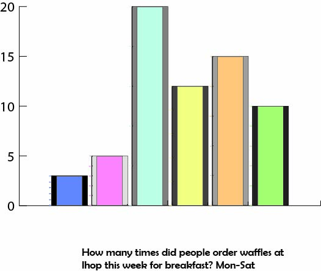

This visualization was established using a data chart from our class. There was a google form used to get a survey of the numbers for each student. I did my data on how many times waffles were ordered from Ihop this week, a predicition for breakfast. I thought the idea was unique and fun and the graph was fun to make becuase you can edit it according to your liking. Colors, patterns, fonts all come to play and it looks nice. There are different ways to make the chart look appealing as well.